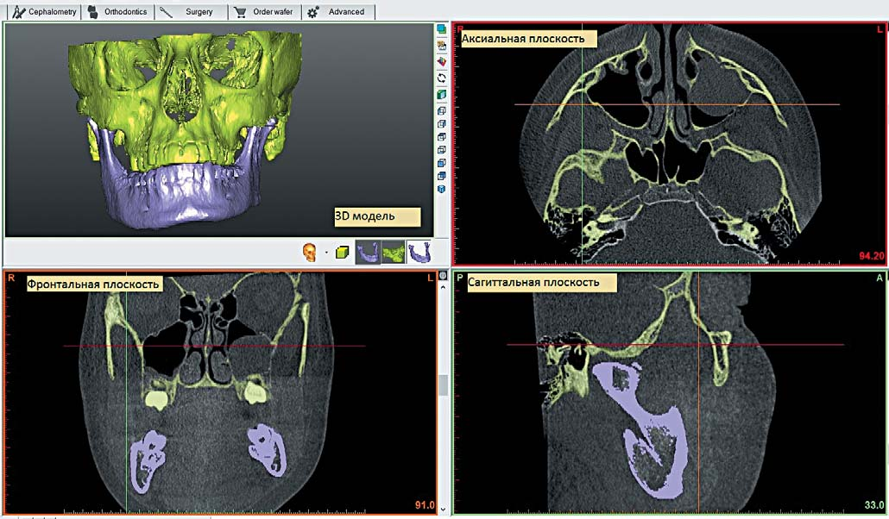
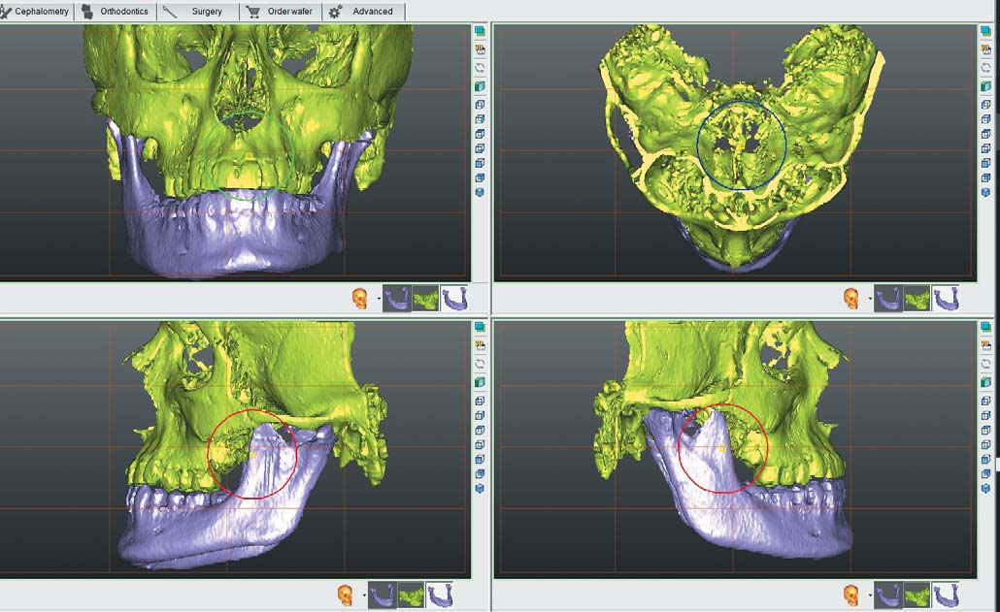
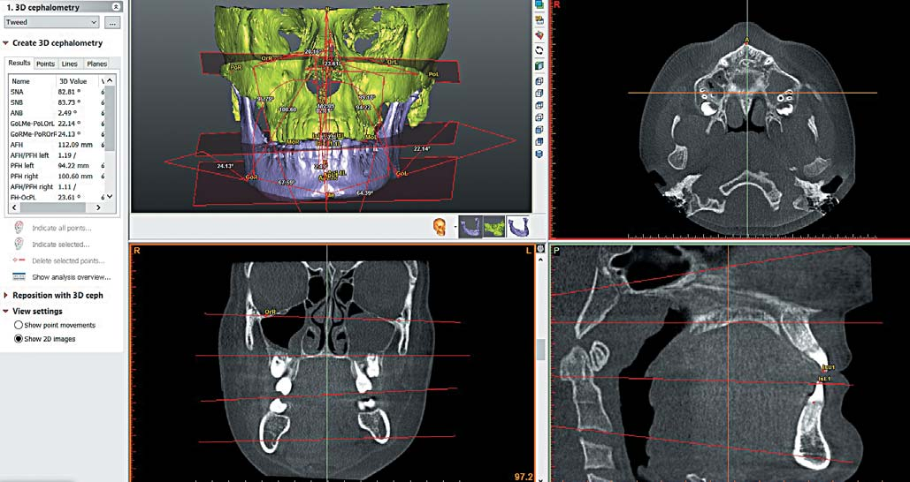
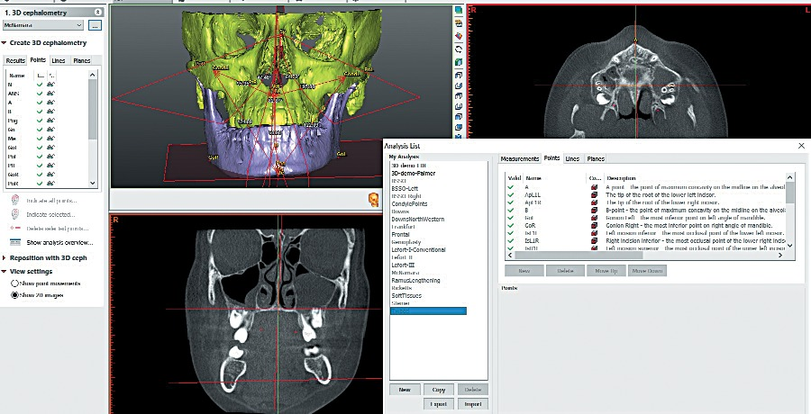
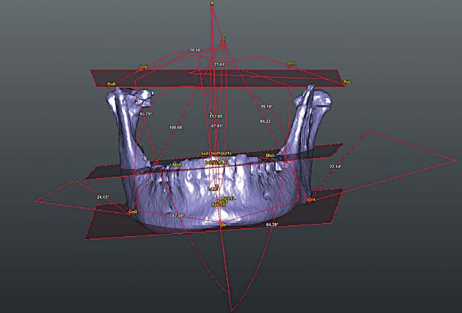
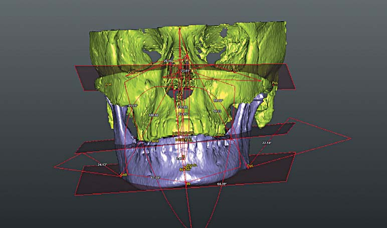

Практичні курси · журнал «ДентАрт» 2017 №3
Конусно-променева комп'ютерна томографія і 3D-цефалометрія: метод вивчення черепно-щелепно-лицьових деформацій
CONE-BEAM COMPUTED TOMOGRAPHY AND 3D-CEPHALOMETRY: CRANIOMAXILLOFACIAL DEFORMITIES INVESTIGATION METHOD
Мета статті – розповісти про досвід використання даних конусно-променевої комп'ютерної томографії (КПКТ) і методу 3D-цефалометрії для вивчення черепно-щелепно-лицьових деформацій на прикладі даних КПКТ пацієнта з гемімандибулярною гіперплазією, які були оброблені і реконструйовані за допомогою програмного забезпечення обробки медичних зображень (SimPlant O&O, Materialise Н.В).
Вступ
Аналіз цефалометрії – один з найважливіших інструментів у діагностиці черепно-щелепно-лицьових деформацій, включаючи асиметрії.1-3 Отримання цефалометричних даних вимагає дуже точної ідентифікації анатомічних структур черепа.
Нині більшість клініцистів використовує 2D-рентгенограми (телерентгенограми) для вимірювань черепа, що є звичайною, рутинною частиною діагностичної оцінки пацієнтів. Однак цей метод має низку обмежень і не завжди буває прийнятним. Медична візуалізація можлива лише у двох площинах, 2D-візуалізація завжди має спотворення зображення на фоні структур, що перекривають,3 рентгенографічного збільшення і можливого повороту голови пацієнта.4, 5 Тому 3D-реконструкція лицьових структур за даними КТ і 3D цефалометричного аналізу має незаперечні переваги для точної діагностики і візуалізації черепно-лицьової морфології.
Сьогодні дані КТ з подальшою об'ємною реконструкцією структур черепа широко використовуються для проведення точних вимірювань, виявлення асиметрій нижньої щелепи, середньої зони обличчя і основи черепа, що майже неможливо ідентифікувати і правильно інтерпретувати, використовуючи 2D-рентгенограму.7
Поєднання 3D-реконструкцій за даними КТ з 3D-друком (швидке прототипування RP) дає можливість точного передопераційного хірургічного планування, проектування і виготовлення інтраопераційних хірургічних шаблонів для остеотомії, індивідуальних шин та черепних імплантатів.
Матеріали і методи
До уваги читачів – аналіз випадку гемімандибулярної гіперплазії. Дані КТ отримані з конусно-променевого томографа Gendex CB-500 by iCat, розмір вокселя зображення 0,2 мм. 3D-реконструкція і сегментація кісткових структур черепа виконані з використанням порогового рівня щільності у програмному модулі SimPlant O & O, Materialise Н.В. (фото 1).

Проведено цефалометричний аналіз 3D-моделі черепа: передньої основи черепа, назомаксилярного комплексу, нижньої щелепи і зубних рядів. Усі анатомічні орієнтири визначалися на 3D-моделі, потім їх позиції були перевірені і відредаговані в режимі мультипланарної реконструкції. Основні точки, що використовуються у цьому випадку для цефалометрії, відповідали прийнятим за різними авторами (фото 4).
Визначено двадцять три виміри, засновані на тридцяти п'яти точках у вигляді лінійних і кутових вимірів у фронтальній, аксіальній і сагітальній площинах як на 2D, так і на 3D-зображеннях (фото 3).

Для аналізу симетрії визначено основні площини: франкфуртська горизонтальна площина (OrL-PoL, OrRPoR), нижньощелепна (GoL-Me, GoR-Me), оклюзійна (MoL-Is1u-MoR) і серединна сагітальна (N-S-ANS). Усі точки і відповідні вимірювання зберігаються для подальшої ідентифікації та аналізу (фото 5).




Результати
Більшість 3D-вимірювань подано по лівому боці і по правому боці окремо для порівняння з нормою і для аналізу симетрії. Результати лінійних і кутових вимірювань відображаються у попередьному розділі. У цьому випадку неможливо виконати хірургічне лікування лише на нижній щелепі для корекції гемімандибулярної гіперплазії, тому що потребують корекції скелетні взаємні співвідношення і пов'язана з цим деформація оклюзійної площини.
Цей випадок обговорювався у двох напрямках: по-перше, асиметрія структур нижньої щелепи, що є основною скаргою пацієнта, по-друге, девіація скелетних структур і зубних рядів.
Як правило, цефалометрія і дентальні гіпсові моделі є загальними інструментами для виявлення скелетних взаємних співвідношень і діагностики прикусу пацієнта. У випадках аналізу з використанням КПКТ дослідження не тільки 3D цефалометричні значення, а й зображення у трьох площинах доступні для переміщення і обертання, щоб показати всі структури, навіть ті, які дублюють одна одну.
1. Асиметрія нижньої щелепи
На рис. 2 достовірно продемонстровано, що нижня щелепа більша з правого боку у порівнянні з лівим. Збільшення об'єму щелепи праворуч починається з нижньощелепної серединної лінії і домінує у виросткового відростка, який вносить основний вклад у розвиток нижньої щелепи у період зростання. Уся нижня щелепа нахилена праворуч. Мандибулярна і оклюзійна площини також нахилені вниз у тому ж напрямку і не паралельні франкфуртській горизонтальній площині, а точка Me міститься ліворуч від сагітальної площини.
Цефалометричні значення вимірювань вочевидь демонструють і підтверджують асиметричну деформацію з такими значеннями: OrLPoL-GoLMe = 27.2°, OrRPoR-GoRMe = 17.2°, розбіжність між лівим і правим zygomaticofrontal швами до структур зубів ZL-MoL = 77.24 mm, ZR-MoR = 80.4 мм, гоніальний кут має різні значення, а також відмінності між лівими і правими значеннями maxillomandibular довжини: Max-Mand Left = 25,6 мм, Макс-Mand справа = 27,13 мм, CondL-A = 100,84 мм, CondR-A = 104,21 мм, CondL-Gn = 126,44 мм, CondR-Gn = 131.34 мм (фото 6).
2. Аналіз у порівнянні зі стандартними нормами структур лицьового черепа і зубоальвеолярного комплексу
Дуже важко оцінити вимірювання, засновані на КПКТ дослідженнях, оскільки 3D стандартні норми не вивчені і не опубліковані у ґрунтовних дослідженнях. Тільки деякі вимірювання у сагітальній площині (кут ANB) і горизонтальній площині (оклюзійна, мандибулярна і франкфуртська) можна достовірно вивчати, маючи 3D-стандарти. Більшість аномалій у цього пацієнта визначаються у структурах задньої частини правої половини нижньої щелепи. Пацієнт має нормальне положення переднього відділу верхньої і нижньої щелепи (SNA = 81,63, SNB = 80,3, ANB = 1,45). Інші дані – це поперечні вимірювання, які доступні для попереднього і подальшого порівняльного аналізу.
Для зубощелепної системи девіація тіла нижньої щелепи може бути причиною відхилення нижнього зубного ряду на тому ж боці. Пацієнт має різні верхньощелепну і нижньощелепну оклюзійні площини, а в конструктивному прикусі – нормальне бічне перекриття праворуч, але збільшене перекриття на лівому боці. Верхні ліві моляри змикаються по щічній поверхні нижніх, а не до оклюзійної поверхні. Має місце деяка скупченість.
Обговорення
3D-цефалометрія дає можливість вимірювати і оцінювати деякі кутові вимірювання, які не можуть бути оцінені за допомогою 2D-рентгенограми через накладання структур. Усі вимірювання можуть бути виконані окремо для правого і лівого боку, а фактичні зображення доступні для аналізу в трьох площинах. Завдяки можливості переміщувати і обертати об'ємні реконструкції структур черепа стає доступним візуалізувати всі особливості анатомії і морфології, а також отримати достовірну та чітку картину всіх асиметрій і аномалій, що робить 3D цефалометричний аналіз набагато ціннішим інструментом у порівнянні зі звичайною 2D-рентгенограмою.
Можливість зберегти переміщення кожного відсегментованого об'єкта, а використовуючи цефалометричні параметри, контролювати ступінь переміщення дає переваги для створення дуже точного хірургічного плану. Аналіз методом кінцевих елементів і комп'ютерне моделювання дозволяють перенести план в операційне поле за допомогою індивідуальних шаблонів, шин, а також індивідуалізувати параметри апаратів для дистракційного остеогенезу і реконструктивних пластин.
Адамс і співавт., 20044 провели порівняльне дослідження традиційної 2D- і 3D-цефалометрії на сухому черепі людини. Вони повідомили, що 2D-цефалометрія показала великі відхилення у порівнянні з контролем (фізичне пряме вимірювання), в той час як 3D-цефалометрія дала набагато точніші вимірювання, в межах приблизно 1 мм від стандарту, і виявилася у 4-5 разів точнішою, ніж 2D-підхід. Було вказано причини неточностей у 2D-вимірах: різниця збільшення структур у зв'язку з різною відстанню до датчика, поворот голови під час рентгенографії, а також ефект накладання анатомічних структур.3, 5 Крім того, Парк і співавт.9 у своєму дослідженні припустили, що КПКТ і 3D-зображення достовірно диференціюють асиметрію середньої зони обличчя і основи черепа, що важко виявити за допомогою звичайного 2D-дослідження.
Таким чином, можна зробити висновок, що 3D КТ є точнішим методом дослідження, і потрібно у майбутньому вносити зміни в протоколи досліджень для щоденної клінічної практики.
Література
- Maeda M., et al. 3D-CT evaluation of facial asymmetry in patient with maxillo deformities. Oral Surg Oral Med Oral Pathol Oral Radiol Endod, 102, Issue 3, Sep, 2006, pp. 382-390.
- Netherway D.J., et al. Three-Dimensional Computed Tomography Cephalometry of Plagiocephaly: Asymmetry and shape Analysis. Clef Palate-Craniofacial J, 43, No. 2, 2006, рр. 201-210.
- Trpkova B., et al. Assessment of facial asymmetries from posteroanterior cephalograms: validity of refence line. Am J Orthod Dentofacial Orthop, 123, 2003 pp. 512-520.
- Adams G.L., et al. Comparison between traditional 2-D Cephalometry and a 3-D approach on human dry skulls. Am J of Orthod. & Dentofacial Orthop, 126, 4, 2004, pp. 397-409.
- Kragskov J., Bosch C., Gyldensted C., and S.S. Pedersen. Comparison of the Reliability of Craniofacial Anatomic Landmarks Based on Cephalometric Radiographs and Three-Dimensional CT Scans. Cleft Palate-Craniofacial J, 34, No. 2, March, 1997, pp. 111-116.
- Park S.H., et al. A Proposal for New Analysis of Craniofacial Morphology by 3-dimensioal computed tomography. Am J of Orhod and Dentofacial Orthop, 129, No. 5, 2006, pp. 600e23-34.
- Zemann W., Santler G., Karcher H. Analysis of midface asymmetry in patients with cleft lip, alveolus and palate at the age of 3 months using 3D-COSMOS measuring system. J Cranio-Maxillofac Surg, 30, 2002, pp. 148-152.
- Cavalacanti M. G.P., Haller J.W., and Vannier M.W. Three-Dimensional Computed Tomography Landmark Measurement in Crainofacial Surgical Planning: Experimental Validation In Vitro. J Oral Maxillofac Surg, 57, 1999, pp. 690-694.
- Kwon T.G., Park H.S., Ryoo H.M., and Lee S.H. A Comparison of Craniofacial Morphology in Patients with and without Facial Asymmetry-A Three-Dimensional Analysis with Computed Tomogray. Int J Oral & Maxillofac Surg, 35, 2006, pp. 43-48.